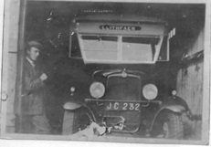
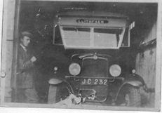

Rote Autowerkstatt
Israel Mathew James Williams kaufte 1920 seinen ersten Bus (einen Ford). Unter der Woche beförderte er Waren nach Cae'r Nant. Die Busse fuhren auch täglich nach Pwllheli. Red Garage diente auch als Tankstelle wo man Paraffin, Benzin und auch Autos kaufen konnte.
 Ein Bild von Red Garage
Ein Bild von Red Garage
 Einer der Busse - Bws Torth
Matt Williams bewundert den Chevrolet
Einer der Busse - Bws Torth
Matt Williams bewundert den Chevrolet
 nom de taid bysus (bus grand-père)) ...
nom de taid bysus (bus grand-père)) ...
 Ein Charabanc vor dem Liverpool House
Ein Charabanc vor dem Liverpool House